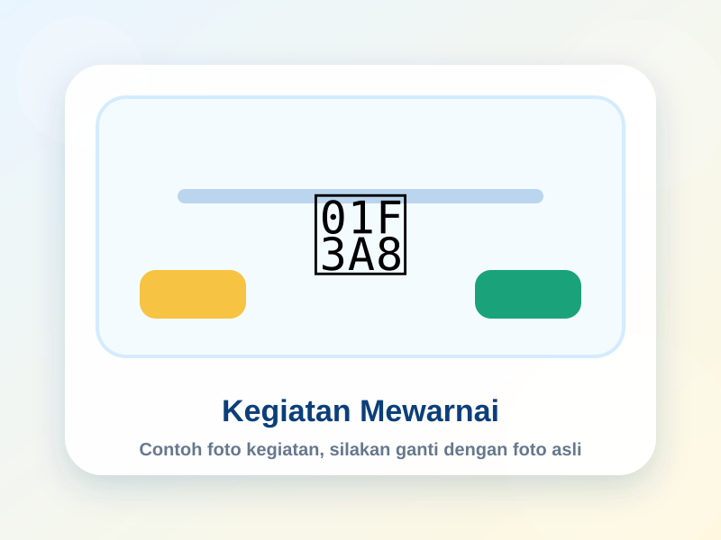
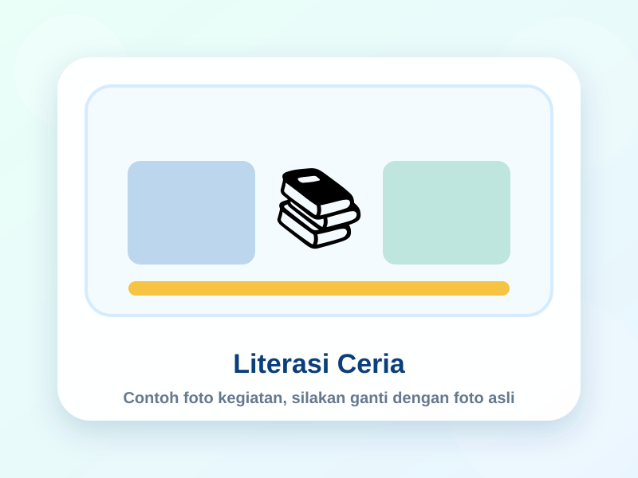
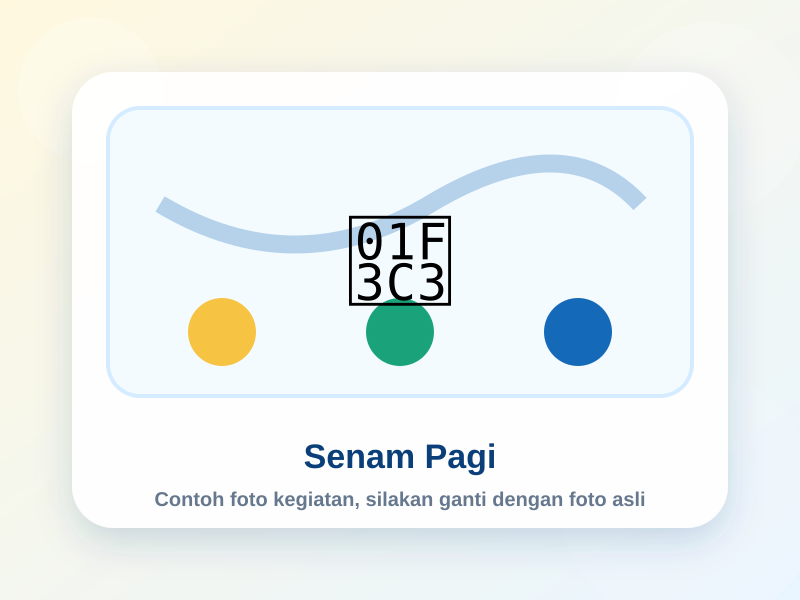
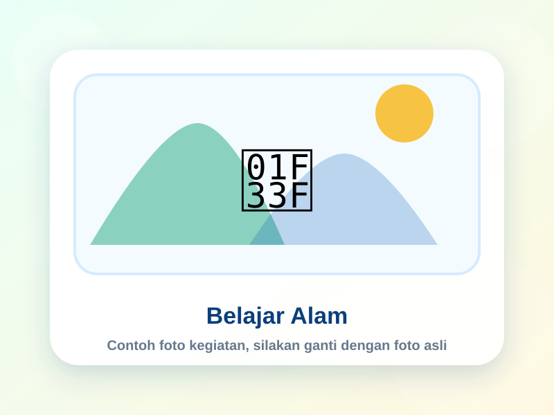
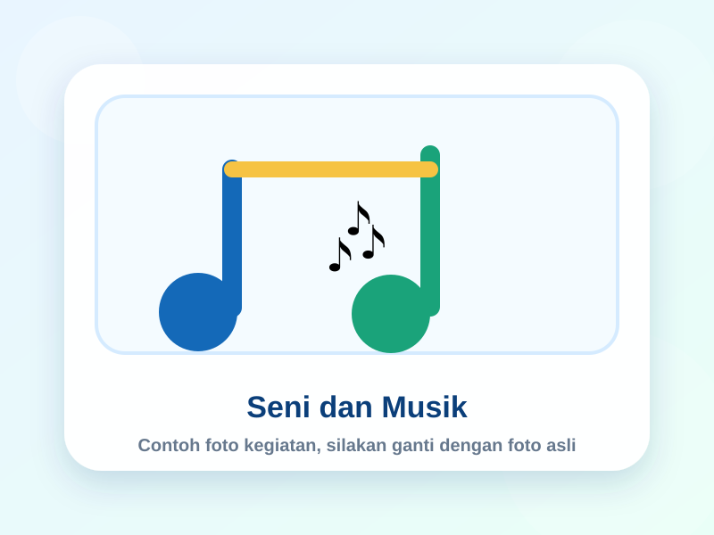
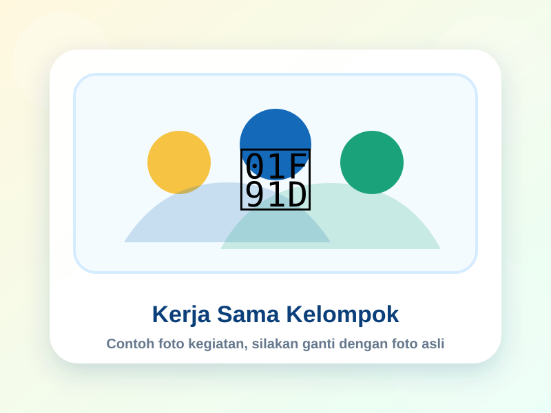

Metode bermain sambil belajar sesuai kebutuhan anak usia dini.
Pendampingan dengan pendekatan ramah anak dan penuh perhatian.
Ruang belajar bersih, nyaman, dan mendukung eksplorasi anak.
Pembiasaan sopan santun, tanggung jawab, dan percaya diri.
Profil Sekolah
Mengenal TK Pertiwi I
TK Pertiwi I merupakan lembaga pendidikan anak usia dini yang berfokus pada tumbuh kembang anak secara menyeluruh, meliputi aspek kognitif, bahasa, sosial emosional, seni, motorik, nilai agama, dan karakter.
Menjadi taman belajar yang ceria, unggul, dan berkarakter.
Terwujudnya peserta didik yang ceria, cerdas, kreatif, mandiri, berkarakter, serta memiliki dasar keimanan dan akhlak mulia sejak usia dini.
- Menciptakan suasana belajar yang aman, nyaman, dan menyenangkan.
- Mengembangkan potensi anak melalui kegiatan bermain edukatif.
- Menanamkan nilai sopan santun, tanggung jawab, dan kerja sama.
- Membangun komunikasi positif antara sekolah dan orang tua.
Program Unggulan
Kegiatan seni, literasi awal, numerasi dasar, pembiasaan doa harian, permainan motorik, kegiatan tematik, dan pengenalan lingkungan sekitar.
Pengajar
Tenaga Pengajar TK Pertiwi I
Bagian ini berisi contoh data pengajar. Foto, nama, dan jabatan dapat diganti sesuai data resmi sekolah.
Guru Kelas
Ibu Siti Aminah, S.Pd.
Guru Kelas A
Guru Kelas
Ibu Rina Lestari, S.Pd.
Guru Kelas B
Kepala Sekolah
Ibu Dewi Kartika, S.Pd.
Kepala TK Pertiwi I
Album Kegiatan
Contoh Foto Kegiatan Sekolah
Bagian ini sudah diberi contoh gambar kegiatan. Untuk mengganti dengan foto asli, cukup timpa file pada folder assets/img/ atau ubah nama file pada kode HTML.






Lokasi Sekolah
Kunjungi TK Pertiwi I
Silakan sesuaikan alamat, kontak, dan tautan Google Maps berikut dengan data resmi sekolah.
TK Pertiwi I
Jl. Contoh Alamat Sekolah No. 01, Desa/Kelurahan, Kecamatan, Kabupaten/Kota.
📞 08xxxxxxxxxx
✉️ tkpertiwi1@email.com
🕘 Senin - Sabtu, 07.30 - 11.00
Buka Google Maps
📍
Area Peta Lokasi
Tempel iframe Google Maps asli sekolah di bagian ini jika website sudah online.
Download
Unduh Dokumen Sekolah
Menu ini disiapkan untuk mengunduh persyaratan, brosur, dan dokumen sekolah dalam bentuk PDF.
Persyaratan Pendaftaran
Contoh file PDF persyaratan awal. File bisa diganti dengan dokumen resmi sekolah.
Download PDFForm Pendaftaran Online
Form pendaftaran berada di halaman tersendiri dan dapat disimpan ke Google Spreadsheet.
Buka FormDokumen Lainnya
Tambahkan file PDF lain ke folder downloads, lalu ubah tautannya di HTML.
Dashboard Admin
Buka halaman admin untuk melihat, mengedit, dan mencetak data pendaftaran dari Spreadsheet.
Buka Admin